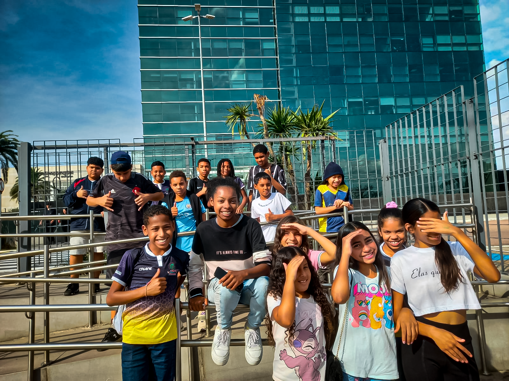
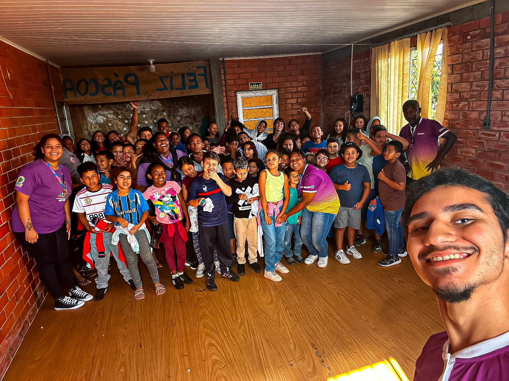
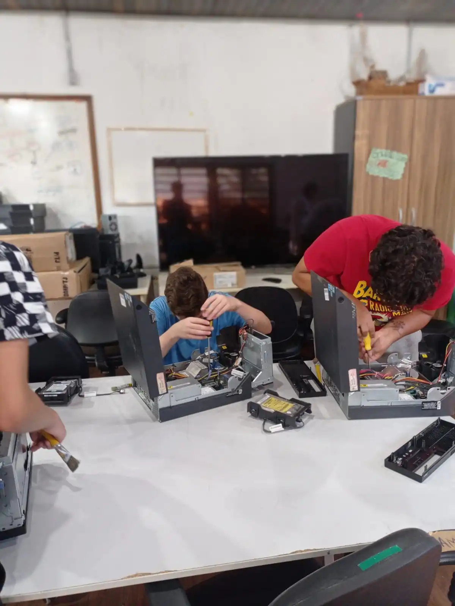
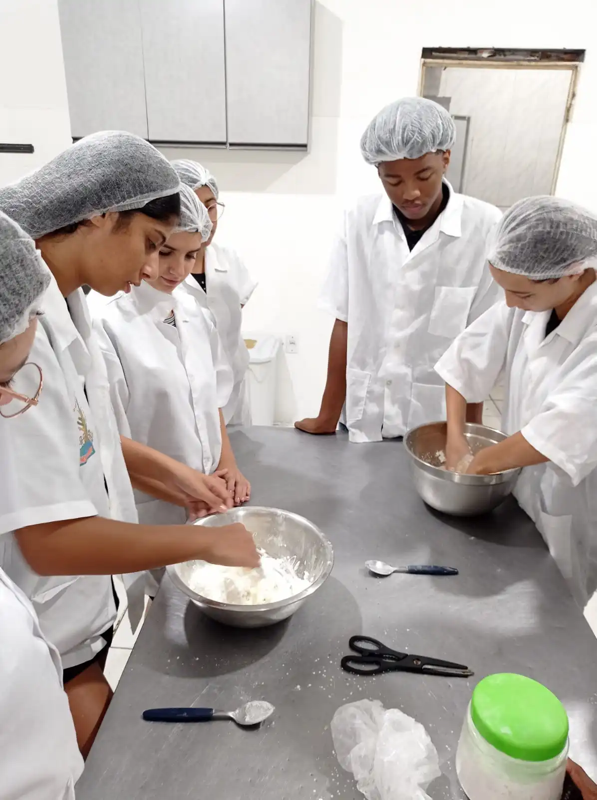

Nada cresce do dia pra noite. Cada ação é uma semente para o amanhã.
SCFV
O objetivo principal é prevenir situações de risco social, fortalecer a convivência familiar e comunitária e promover a
inclusão social dos participantes.

SCFV Crianças
O SCFV é estruturado em grupos e oferece atividades planejadas de acordo com as faixas etárias e interesses dos participantes.
As ações incluem atividades culturais, artísticas, esportivas, de lazer e educativas, promovendo o desenvolvimento de habilidades,
a socialização e a construção de projetos de vida. O serviço é referenciado aos Centros de Referência de Assistência Social
(CRAS), que atuam como porta de entrada para os serviços socioassistenciais.

SEDE Rio Branco
Além das atividades regulares, a instituição promove encontros entre os alunos de diferentes núcleos, fortalecendo os laços
comunitários e proporcionando experiências enriquecedoras para todos os participantes .
SCFV Adolescentes
Nossa proposta pedagógica respeita o desenvolvimento integral da criança em cada fase da infância, proporcionando um ambiente
acolhedor, seguro e estimulante. As turmas são organizadas por faixa etária, garantindo que cada etapa do crescimento seja
acompanhada com atividades e cuidados adequados:

Informática
Voltado especialmente para iniciantes, o curso de informática se inicia no básico com montagem, desmontagem e limpeza periférica,
além disso também é trabalhado programação de sites e jogos. É uma oportunidade incrível para
quem quer entrar no mercado de trabalho ou simplesmente se atualizar no mundo digital.

Padaria
Esse curso ensina técnicas práticas de panificação artesanal e confeitaria, com foco na geração de renda. Os educandos aprendem
a fazer pães, bolos, salgados e outras delícias, podendo empreender com o que produzem.